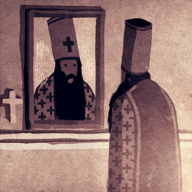
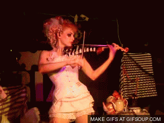
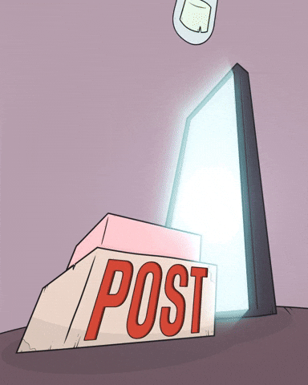
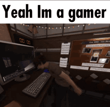
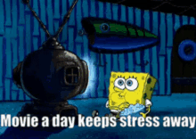

My Hobbies
Orthodox Christian Faith
My faith is the anchor of my life. In Orthodox Christianity, I have found a deep purpose and a peace that transforms each day. I dedicate my time to prayer, the study of the Scriptures, and the wisdom of the Church Fathers.
The Violin
The violin is my most recent adventure. Every note is a challenge I joyfully accept, seeking to express beauty through its strings. My goal is to play hymns that lift the soul and glorify God.
Content Creation
Through my social media, I share my faith journey and my reflections. It is my way of using technology to connect with others and share the light and truth I have found in Christ.
Deep Reading
I am a voracious reader. I immerse myself in theology, philosophy, and epic fantasy like "The Stormlight Archive". For me, reading is exploring worlds, both imaginary ones and those of deep thought.

Creative Programming
I am fascinated by building digital tools that solve real problems. From automating tasks to creating small games, programming is my way of bringing order and utility to the digital world.

Immersive Video Games
Video games are my escape to fantastic worlds. I enjoy getting lost in the stories of RPGs like Skyrim, the creativity of Stardew Valley, or the legends of the Zelda saga.
Cinema with Purpose
In cinema, I seek more than entertainment; I look for stories that inspire and provoke reflection. From timeless classics to grand sagas, I value films that leave a lasting mark.
Digital Art
Digital art is my primary channel for creative expression. With a stylus as my brush and a screen as my canvas, I bring ideas to life in a visually dynamic way. It's a space where I can experiment with color, light, and form, creating everything from character designs to intricate illustrations. This hobby allows me to translate my imagination into tangible art and share my personal vision with the world.